Changes in PRIMAP-hist v2.6.1_final compared to v2.6_final for Armenia
2025-03-19
Johannes Gütschow
Change analysis for Armenia for PRIMAP-hist v2.6.1_final compared to v2.6_final
Overview over emissions by sector and gas
The following figures show the aggregate national total emissions excluding LULUCF AR6GWP100 for the country reported priority scenario. The dotted linesshow the v2.6_final data.
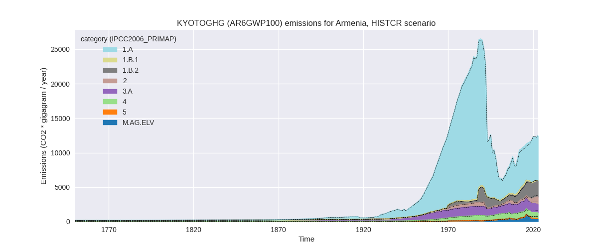
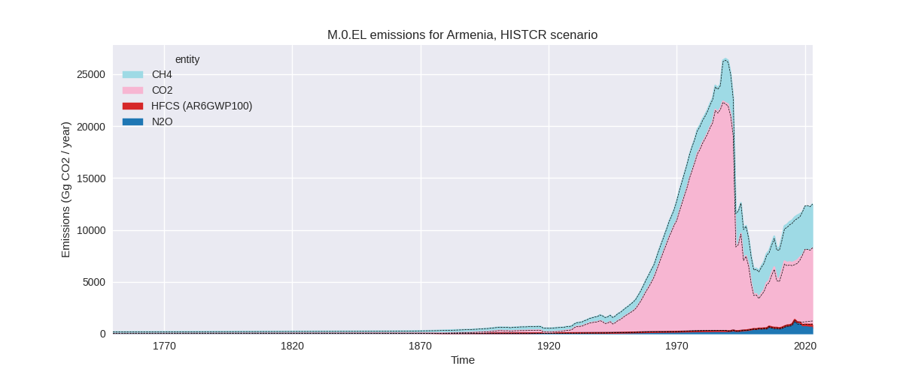
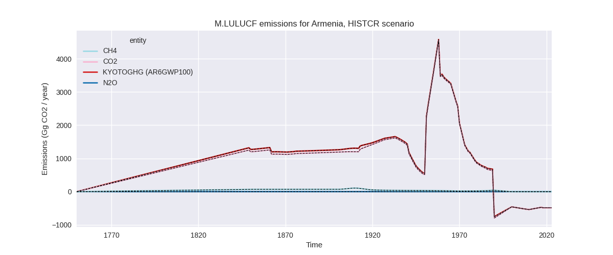
The following figures show the aggregate national total emissions excluding LULUCF AR6GWP100 for the third party priority scenario. The dotted linesshow the v2.6_final data.
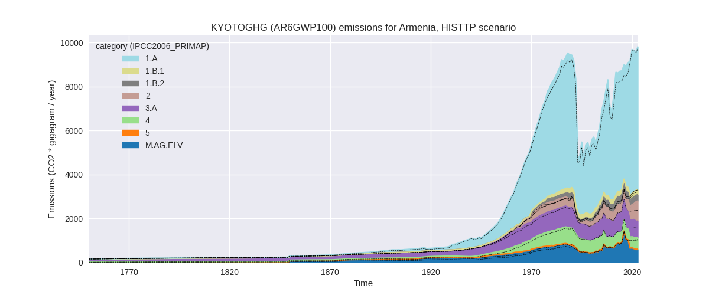
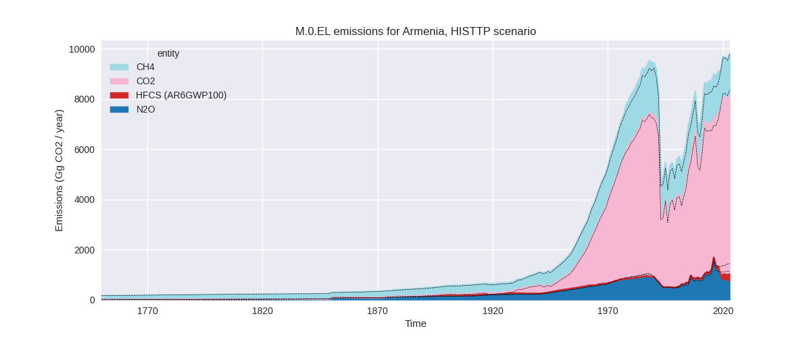
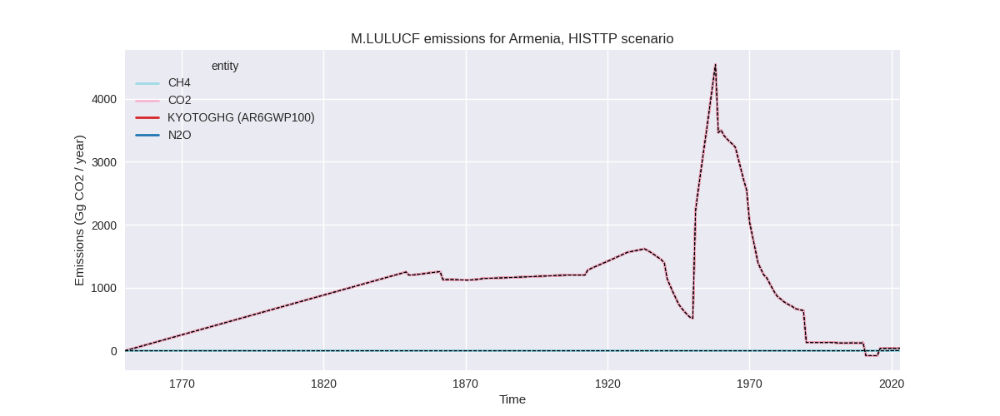
Overview over changes
In the country reported priority scenario we have the following changes for aggregate Kyoto GHG and national total emissions excluding LULUCF (M.0.EL):
- Emissions in 2023 have changed by 0.0%% (1.71 Gg CO2 / year)
- Emissions in 1990-2023 have changed by 1.3%% (137.02 Gg CO2 / year)
In the third party priority scenario we have the following changes for aggregate Kyoto GHG and national total emissions excluding LULUCF (M.0.EL):
- Emissions in 2023 have changed by 0.6%% (61.92 Gg CO2 / year)
- Emissions in 1990-2023 have changed by 4.1%% (293.43 Gg CO2 / year)
Most important changes per scenario and time frame
In the country reported priority scenario the following sector-gas combinations have the highest absolute impact on national total KyotoGHG (AR6GWP100) emissions in 2023 (top 5):
- 1: M.AG.ELV, N2O with -330.49 Gg CO2 / year (-45.2%)
- 2: 1.B.2, CO2 with 188.81 Gg CO2 / year (inf%)
- 3: 2, CO2 with 109.68 Gg CO2 / year (17.6%)
- 4: 1.A, CH4 with 24.67 Gg CO2 / year (50.2%)
- 5: 3.A, N2O with -14.28 Gg CO2 / year (-15.5%)
In the country reported priority scenario the following sector-gas combinations have the highest absolute impact on national total KyotoGHG (AR6GWP100) emissions in 1990-2023 (top 5):
- 1: 1.B.2, CO2 with 168.73 Gg CO2 / year (inf%)
- 2: M.AG.ELV, N2O with -43.77 Gg CO2 / year (-10.9%)
- 3: M.AG.ELV, CO2 with 4.36 Gg CO2 / year (12.5%)
- 4: 2, CO2 with 4.10 Gg CO2 / year (1.4%)
- 5: 1.A, CH4 with 1.39 Gg CO2 / year (2.1%)
In the third party priority scenario the following sector-gas combinations have the highest absolute impact on national total KyotoGHG (AR6GWP100) emissions in 2023 (top 5):
- 1: M.AG.ELV, N2O with -438.17 Gg CO2 / year (-45.2%)
- 2: 1.B.1, CH4 with 227.43 Gg CO2 / year (11649177.7%)
- 3: 1.B.2, CO2 with 188.81 Gg CO2 / year (inf%)
- 4: 2, CO2 with 87.54 Gg CO2 / year (16.9%)
- 5: 4, CH4 with -62.48 Gg CO2 / year (-11.9%)
In the third party priority scenario the following sector-gas combinations have the highest absolute impact on national total KyotoGHG (AR6GWP100) emissions in 1990-2023 (top 5):
- 1: 1.B.1, CH4 with 225.45 Gg CO2 / year (81709.3%)
- 2: 1.B.2, CO2 with 168.73 Gg CO2 / year (inf%)
- 3: M.AG.ELV, N2O with -59.45 Gg CO2 / year (-8.8%)
- 4: 4, CH4 with -44.63 Gg CO2 / year (-8.3%)
- 5: 1.A, CH4 with -8.56 Gg CO2 / year (-16.2%)
Notes on data changes
Here we list notes explaining important emissions changes for the country.
- Country reported data has not been updated and the changes in the CR scenario are small for most sectors. The last years have higher changes for some sectors and gases because of changes in the third party data used to extend the country reported data.
- The TP time series has high changes especially in the fugitive emissions sectors (1.B.1, CH4 and 1.B.2, CO2) where data has changed from 0 or missing to a non-zero number.
- The highest absolute change in 2023 is from N2O in M.AG.ELV where new FAO data is much lower than the previous version for 2019 and later.
Changes by sector and gas
For each scenario and time frame the changes are displayed for all individual sectors and all individual gases. In the sector plot we use aggregate Kyoto GHGs in AR6GWP100. In the gas plot we usenational total emissions without LULUCF.
country reported scenario
2023
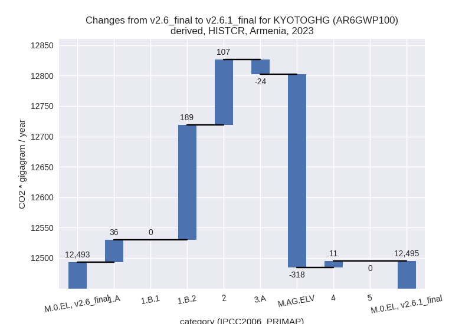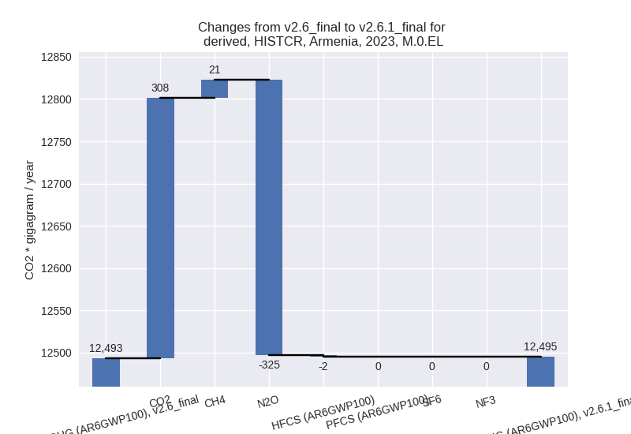
1990-2023
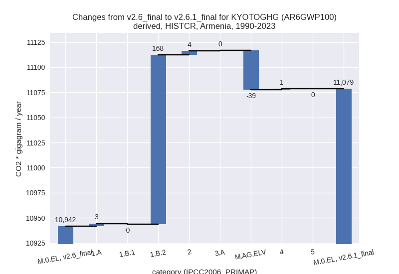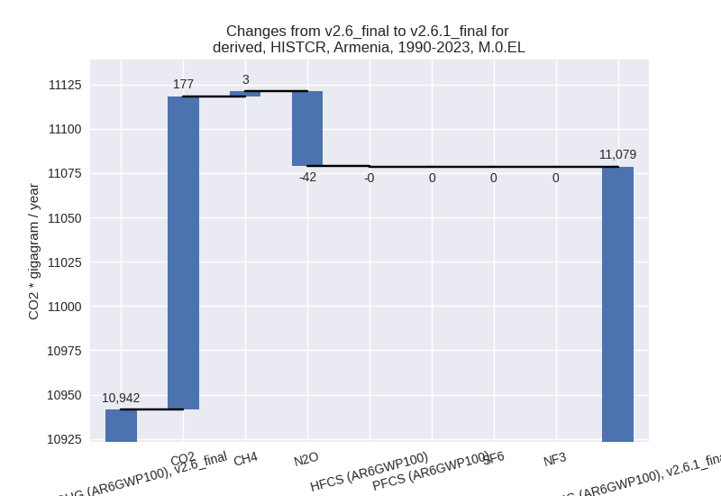
third party scenario
2023
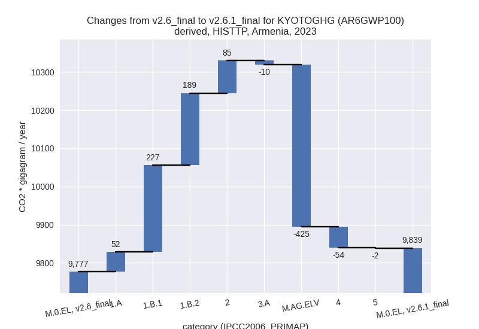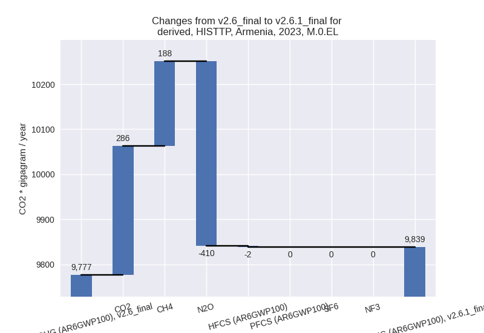
1990-2023
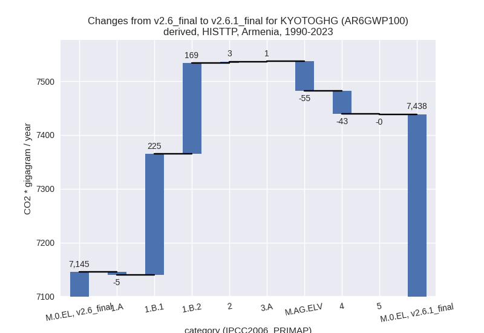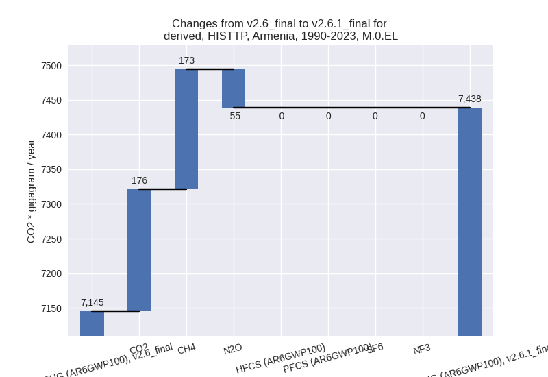
Detailed changes for the scenarios:
country reported scenario (HISTCR):
Most important changes per time frame
For 2023 the following sector-gas combinations have the highest absolute impact on national total KyotoGHG (AR6GWP100) emissions in 2023 (top 5):
- 1: M.AG.ELV, N2O with -330.49 Gg CO2 / year (-45.2%)
- 2: 1.B.2, CO2 with 188.81 Gg CO2 / year (inf%)
- 3: 2, CO2 with 109.68 Gg CO2 / year (17.6%)
- 4: 1.A, CH4 with 24.67 Gg CO2 / year (50.2%)
- 5: 3.A, N2O with -14.28 Gg CO2 / year (-15.5%)
For 1990-2023 the following sector-gas combinations have the highest absolute impact on national total KyotoGHG (AR6GWP100) emissions in 1990-2023 (top 5):
- 1: 1.B.2, CO2 with 168.73 Gg CO2 / year (inf%)
- 2: M.AG.ELV, N2O with -43.77 Gg CO2 / year (-10.9%)
- 3: M.AG.ELV, CO2 with 4.36 Gg CO2 / year (12.5%)
- 4: 2, CO2 with 4.10 Gg CO2 / year (1.4%)
- 5: 1.A, CH4 with 1.39 Gg CO2 / year (2.1%)
Changes in the main sectors for aggregate KyotoGHG (AR6GWP100) are
- 1: Total sectoral emissions in 2022 are 8692.98 Gg
CO2 / year which is 71.0% of M.0.EL emissions. 2023 Emissions have
changed by 2.6% (225.60 Gg CO2 /
year). 1990-2023 Emissions have changed by 2.1% (170.73 Gg CO2 / year). For 2023 the
changes per gas
are:
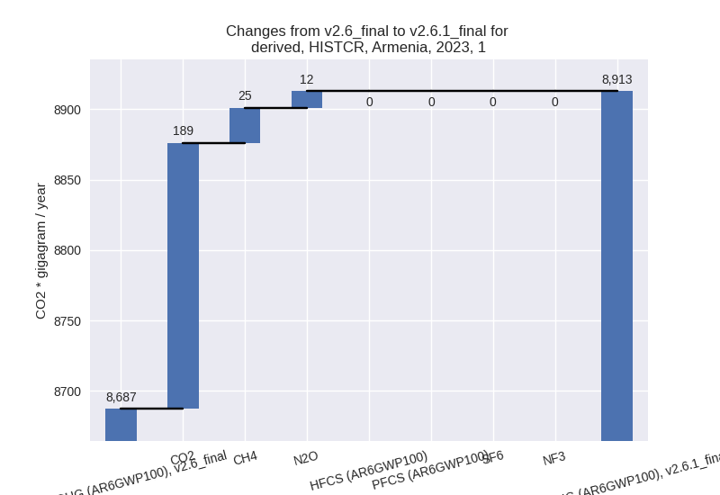
For 1990-2023 the changes per gas are:
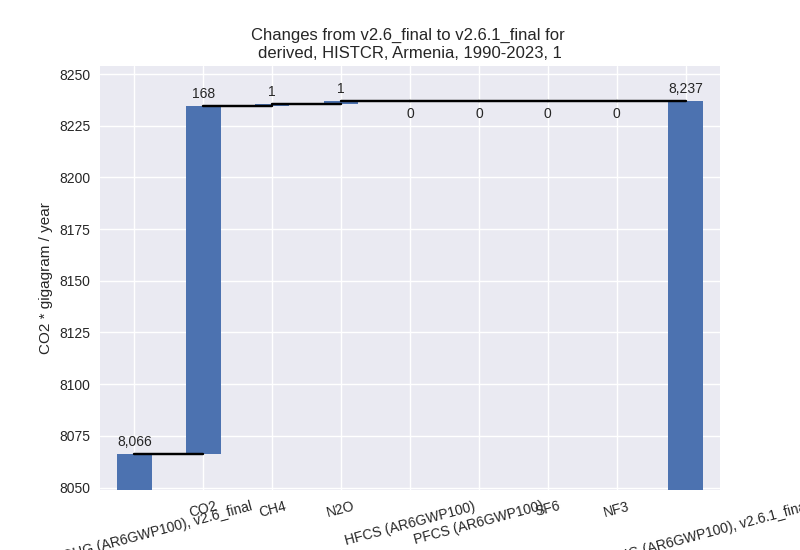
The changes come from the following subsectors:- 1.A: Total sectoral emissions in 2022 are 6286.25 Gg CO2 / year which is 72.3% of category 1 emissions. 2023 Emissions have changed by 0.6% (36.43 Gg CO2 / year). 1990-2023 Emissions have changed by 0.0% (2.76 Gg CO2 / year).
- 1.B.1: Total sectoral emissions in 2022 are 0.00 Gg
CO2 / year which is 0.0% of category 1 emissions. 2023 Emissions have
changed by 1.3% (0.00 Gg CO2 /
year). 1990-2023 Emissions have changed by -100.0% (-0.48 Gg CO2 / year). For
1990-2023 the changes per gas
are:
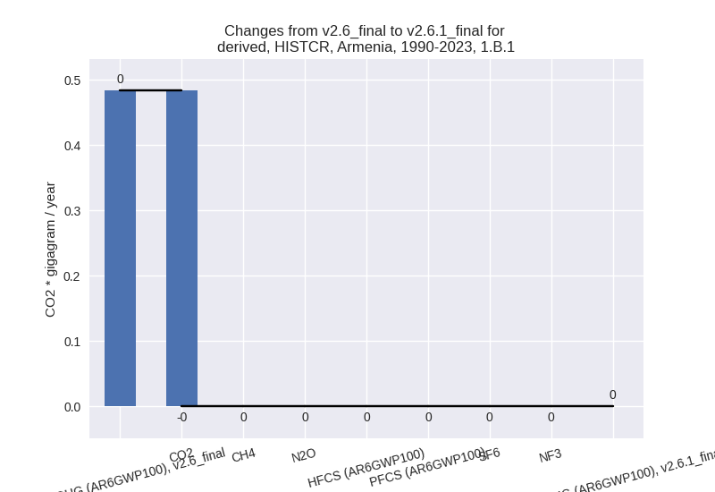
There is no subsector information available in PRIMAP-hist. - 1.B.2: Total sectoral emissions in 2022 are 2406.73
Gg CO2 / year which is 27.7% of category 1 emissions. 2023 Emissions
have changed by 8.5% (189.16 Gg CO2
/ year). 1990-2023 Emissions have changed by 12.1% (168.45 Gg CO2 / year). For 2023 the
changes per gas
are:
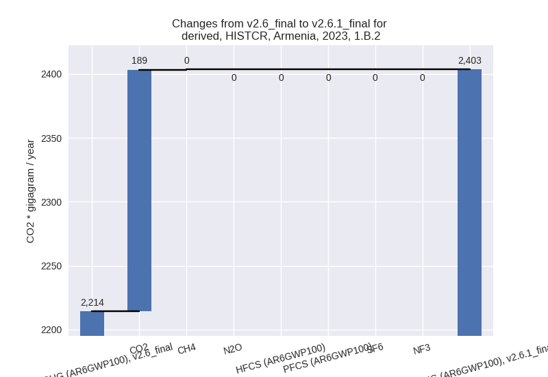
For 1990-2023 the changes per gas are:
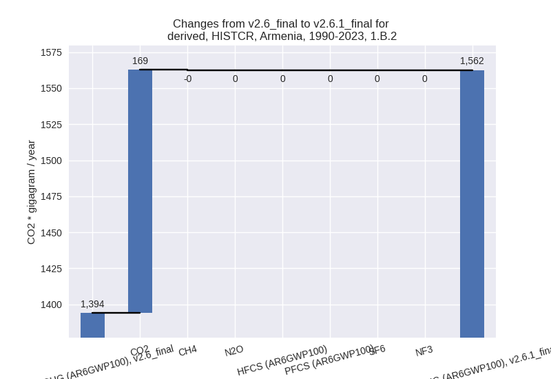
There is no subsector information available in PRIMAP-hist.
- 2: Total sectoral emissions in 2022 are 1027.21 Gg
CO2 / year which is 8.4% of M.0.EL emissions. 2023 Emissions have
changed by 11.4% (107.41 Gg CO2 /
year). 1990-2023 Emissions have changed by 1.0% (3.94 Gg CO2 / year). For 2023 the
changes per gas
are:
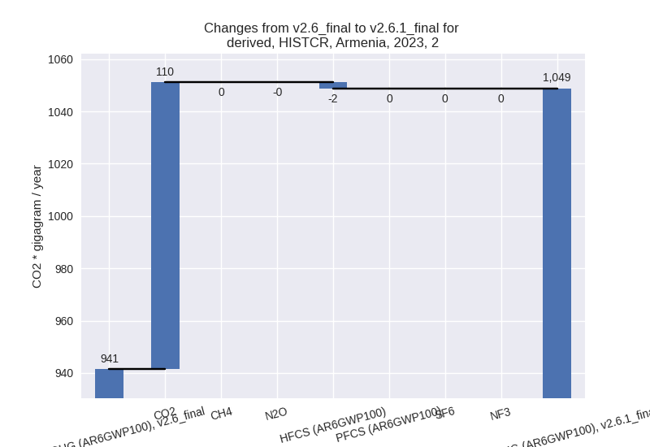 - M.AG: Total sectoral emissions in 2022 are 1689.69
Gg CO2 / year which is 13.8% of M.0.EL emissions. 2023 Emissions have
changed by -16.8% (-341.91 Gg CO2 /
year). 1990-2023 Emissions have changed by -2.3% (-38.76 Gg CO2 / year). For 2023 the
changes per gas
are:
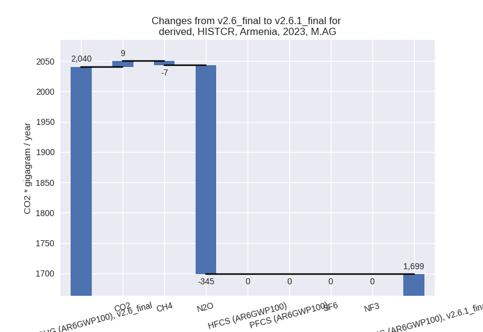
For 1990-2023 the changes per gas are:
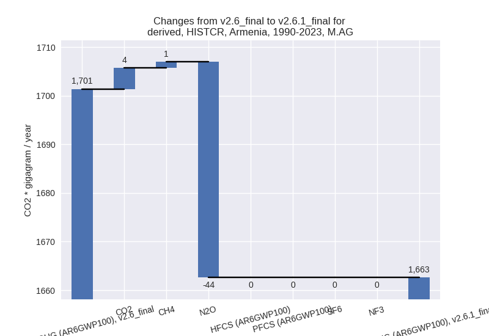
The changes come from the following subsectors:- 3.A: Total sectoral emissions in 2022 are 1243.86 Gg CO2 / year which is 73.6% of category M.AG emissions. 2023 Emissions have changed by -1.9% (-24.26 Gg CO2 / year). 1990-2023 Emissions have changed by 0.0% (0.49 Gg CO2 / year).
- M.AG.ELV: Total sectoral emissions in 2022 are
445.83 Gg CO2 / year which is 26.4% of category M.AG emissions. 2023
Emissions have changed by -41.2%
(-317.65 Gg CO2 / year). 1990-2023 Emissions have changed by -9.0% (-39.25 Gg CO2 / year). For 2023 the
changes per gas
are:
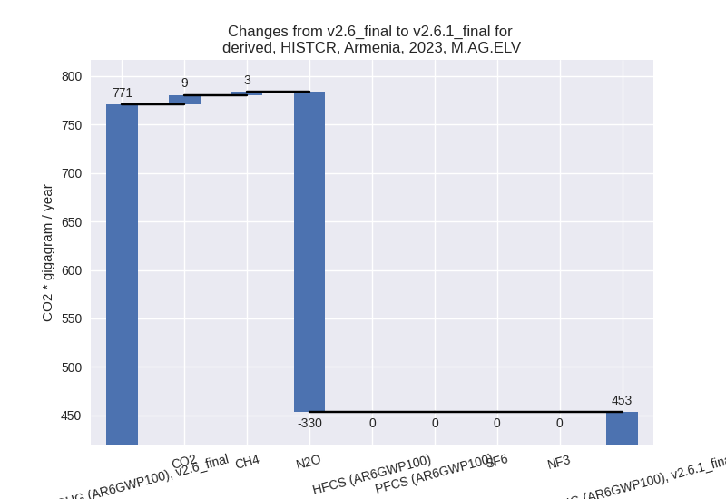
For 1990-2023 the changes per gas are:
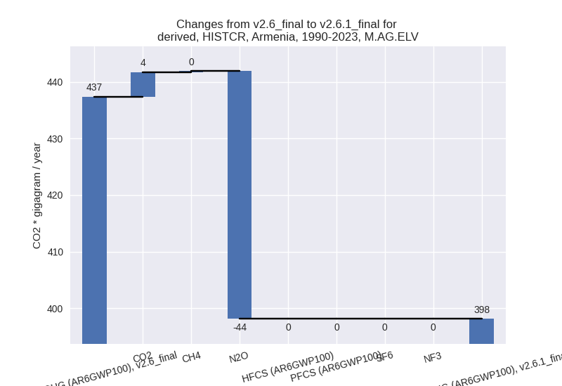
There is no subsector information available in PRIMAP-hist.
- 4: Total sectoral emissions in 2022 are 826.57 Gg CO2 / year which is 6.8% of M.0.EL emissions. 2023 Emissions have changed by 1.3% (10.61 Gg CO2 / year). 1990-2023 Emissions have changed by 0.1% (1.12 Gg CO2 / year).
- 5: No data
third party scenario (HISTTP):
Most important changes per time frame
For 2023 the following sector-gas combinations have the highest absolute impact on national total KyotoGHG (AR6GWP100) emissions in 2023 (top 5):
- 1: M.AG.ELV, N2O with -438.17 Gg CO2 / year (-45.2%)
- 2: 1.B.1, CH4 with 227.43 Gg CO2 / year (11649177.7%)
- 3: 1.B.2, CO2 with 188.81 Gg CO2 / year (inf%)
- 4: 2, CO2 with 87.54 Gg CO2 / year (16.9%)
- 5: 4, CH4 with -62.48 Gg CO2 / year (-11.9%)
For 1990-2023 the following sector-gas combinations have the highest absolute impact on national total KyotoGHG (AR6GWP100) emissions in 1990-2023 (top 5):
- 1: 1.B.1, CH4 with 225.45 Gg CO2 / year (81709.3%)
- 2: 1.B.2, CO2 with 168.73 Gg CO2 / year (inf%)
- 3: M.AG.ELV, N2O with -59.45 Gg CO2 / year (-8.8%)
- 4: 4, CH4 with -44.63 Gg CO2 / year (-8.3%)
- 5: 1.A, CH4 with -8.56 Gg CO2 / year (-16.2%)
Changes in the main sectors for aggregate KyotoGHG (AR6GWP100) are
- 1: Total sectoral emissions in 2022 are 6817.16 Gg
CO2 / year which is 71.1% of M.0.EL emissions. 2023 Emissions have
changed by 7.1% (468.01 Gg CO2 /
year). 1990-2023 Emissions have changed by 8.3% (388.33 Gg CO2 / year). For 2023 the
changes per gas
are:
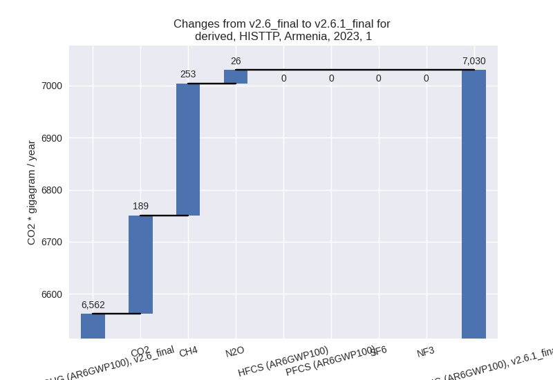
For 1990-2023 the changes per gas are:
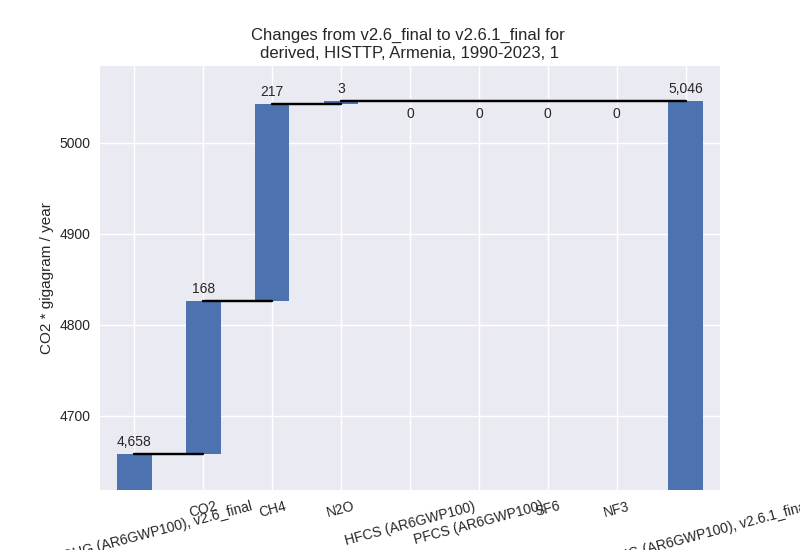
The changes come from the following subsectors:- 1.A: Total sectoral emissions in 2022 are 6297.14 Gg CO2 / year which is 92.4% of category 1 emissions. 2023 Emissions have changed by 0.8% (51.75 Gg CO2 / year). 1990-2023 Emissions have changed by -0.1% (-5.37 Gg CO2 / year).
- 1.B.1: Total sectoral emissions in 2022 are 226.90
Gg CO2 / year which is 3.3% of category 1 emissions. 2023 Emissions have
changed by 11524685.4% (227.43 Gg
CO2 / year). 1990-2023 Emissions have changed by 29630.0% (224.97 Gg CO2 / year). For 2023
the changes per gas
are:
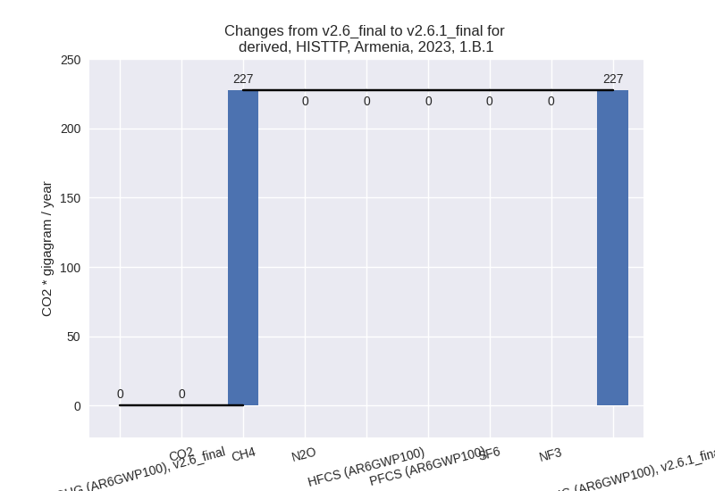
For 1990-2023 the changes per gas are:
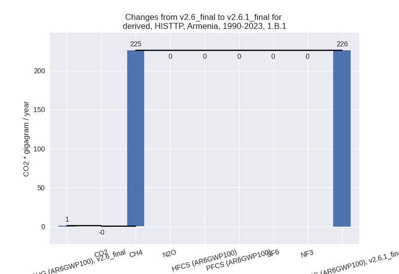
There is no subsector information available in PRIMAP-hist. - 1.B.2: Total sectoral emissions in 2022 are 293.12
Gg CO2 / year which is 4.3% of category 1 emissions. 2023 Emissions have
changed by 204.0% (188.82 Gg CO2 /
year). 1990-2023 Emissions have changed by 214.3% (168.73 Gg CO2 / year). For 2023
the changes per gas
are:
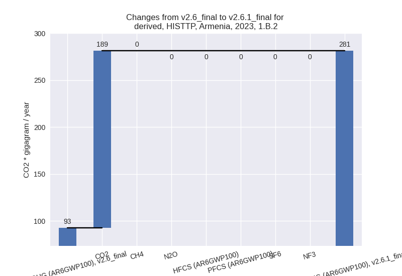
For 1990-2023 the changes per gas are:
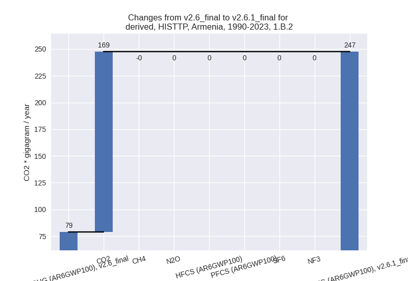
There is no subsector information available in PRIMAP-hist.
- 2: Total sectoral emissions in 2022 are 898.59 Gg
CO2 / year which is 9.4% of M.0.EL emissions. 2023 Emissions have
changed by 10.2% (85.22 Gg CO2 /
year). 1990-2023 Emissions have changed by 0.7% (2.98 Gg CO2 / year). For 2023 the
changes per gas
are:
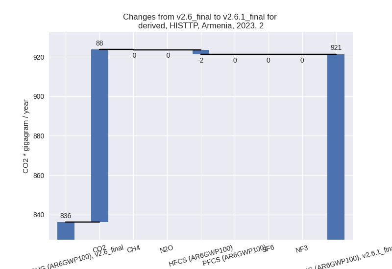 - M.AG: Total sectoral emissions in 2022 are 1328.31
Gg CO2 / year which is 13.9% of M.0.EL emissions. 2023 Emissions have
changed by -24.5% (-435.51 Gg CO2 /
year). 1990-2023 Emissions have changed by -3.7% (-54.42 Gg CO2 / year). For 2023 the
changes per gas
are:

For 1990-2023 the changes per gas are:
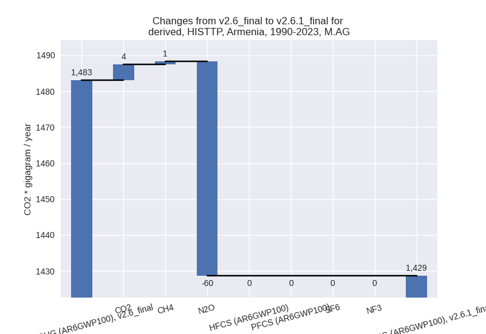
The changes come from the following subsectors:- 3.A: Total sectoral emissions in 2022 are 753.45 Gg CO2 / year which is 56.7% of category M.AG emissions. 2023 Emissions have changed by -1.4% (-10.43 Gg CO2 / year). 1990-2023 Emissions have changed by 0.1% (0.50 Gg CO2 / year).
- M.AG.ELV: Total sectoral emissions in 2022 are
574.86 Gg CO2 / year which is 43.3% of category M.AG emissions. 2023
Emissions have changed by -42.1%
(-425.09 Gg CO2 / year). 1990-2023 Emissions have changed by -7.7% (-54.92 Gg CO2 / year). For 2023 the
changes per gas
are:
For 1990-2023 the changes per gas are:
There is no subsector information available in PRIMAP-hist.
- 4: Total sectoral emissions in 2022 are 513.57 Gg
CO2 / year which is 5.4% of M.0.EL emissions. 2023 Emissions have
changed by -9.4% (-54.04 Gg CO2 /
year). 1990-2023 Emissions have changed by -7.4% (-43.04 Gg CO2 / year). For 2023 the
changes per gas
are:
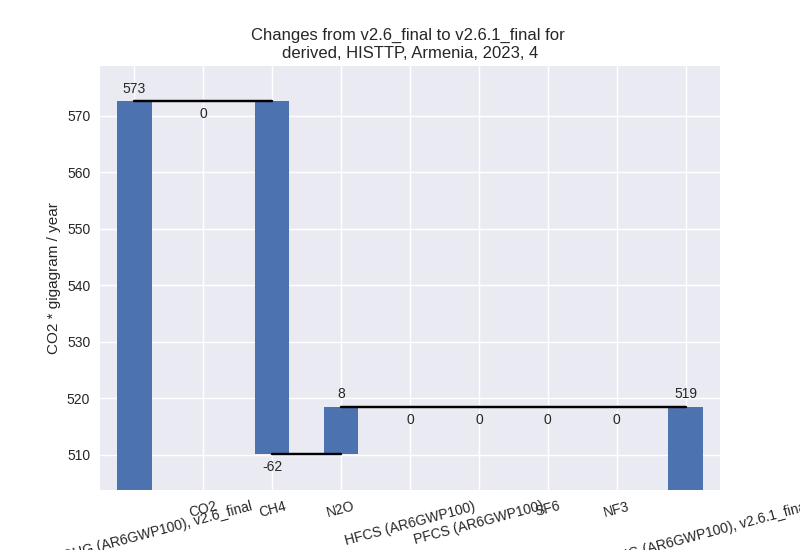
For 1990-2023 the changes per gas are:
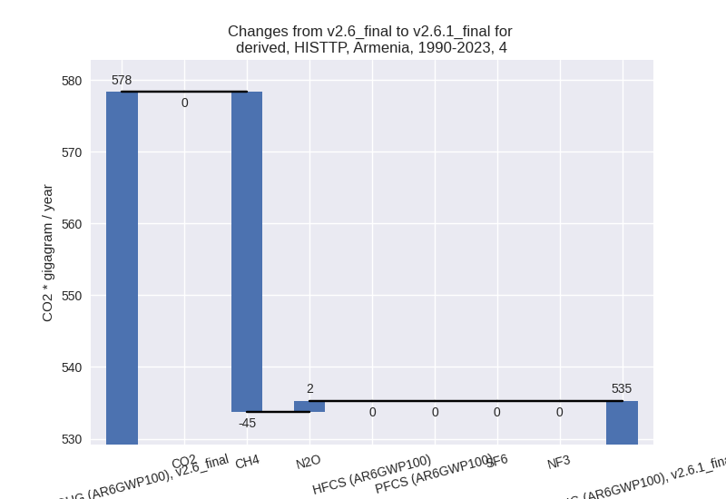 - 5: Total sectoral emissions in 2022 are 29.51 Gg
CO2 / year which is 0.3% of M.0.EL emissions. 2023 Emissions have
changed by -5.5% (-1.75 Gg CO2 /
year). 1990-2023 Emissions have changed by -1.7% (-0.42 Gg CO2 / year). For 2023 the
changes per gas
are:
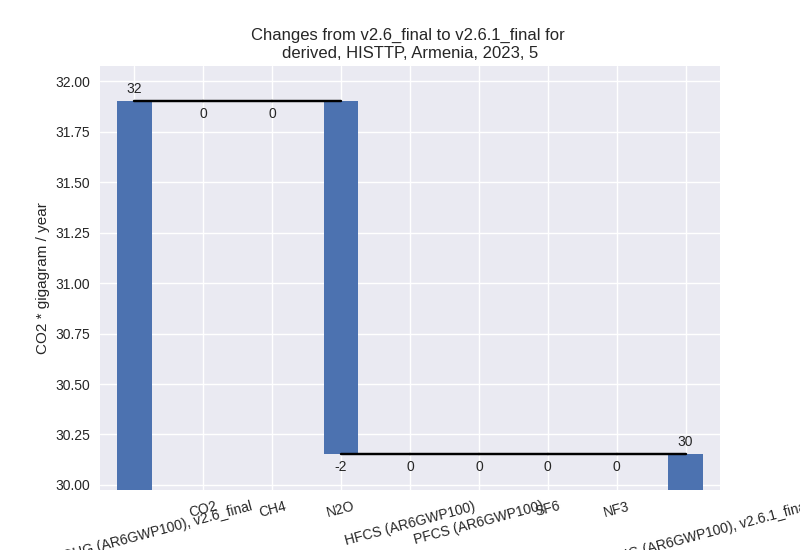